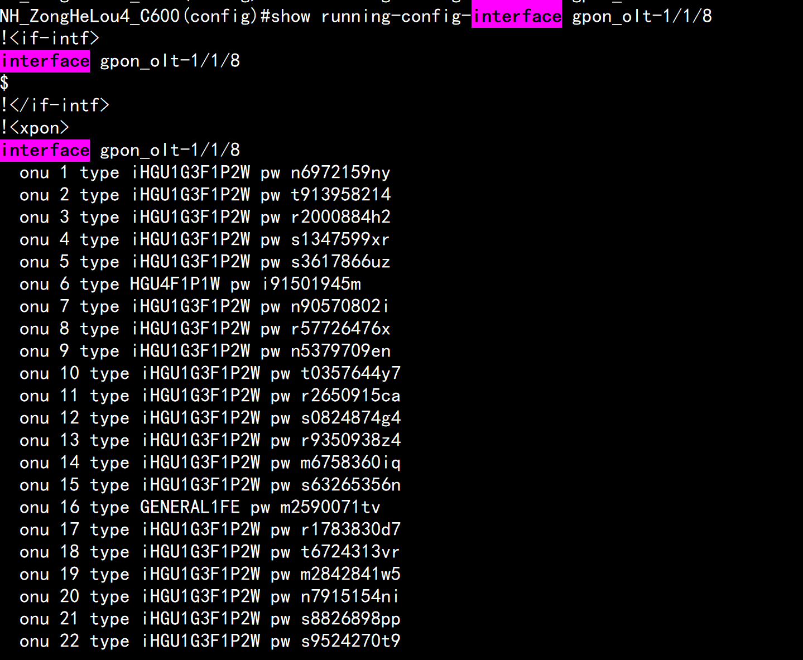
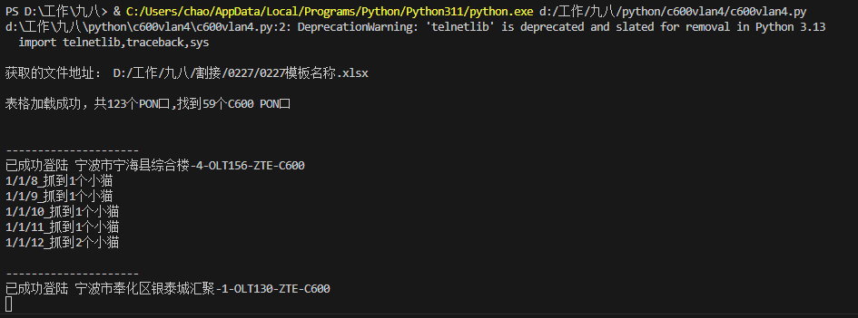
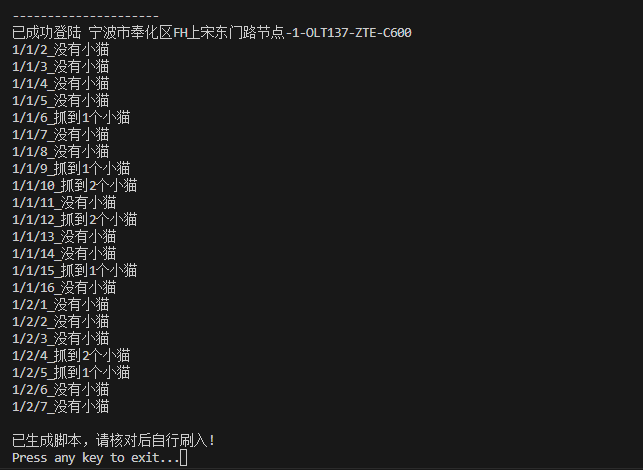
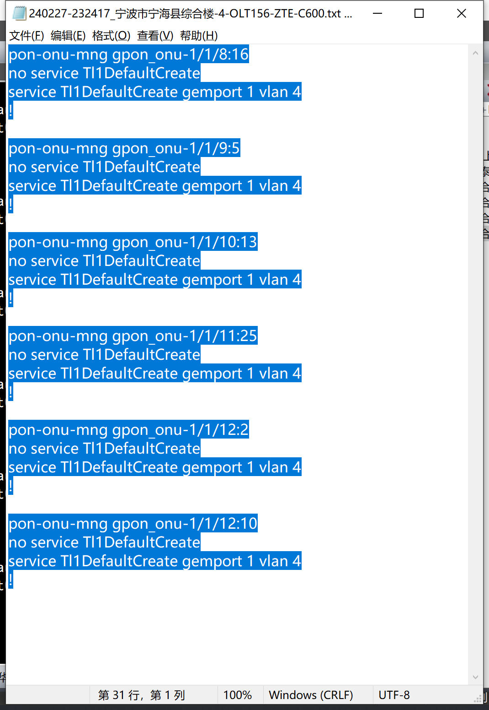
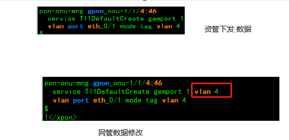

批量修改数据
问题
资管平台再下发网管数据时，onu的配置缺少部分字段(gemport少了vlan4)，会导致部分用户mac起不来，无法正常上网。
修改前
NH_ZongHeLou4_C600(config)#show running-config-interface gpon_onu-1/1/8:16
!<if-intf>
interface gpon_onu-1/1/8:16
$
!</if-intf>
!<xpon>
interface gpon_onu-1/1/8:16
name ********
tcont 1 name Tl1DefaultCreate allocid 1783 profile 100M-UP
sn-bind disable
gemport 1 name Tl1DefaultCreate portid 1032 tcont 1
$
pon-onu-mng gpon_onu-1/1/8:16
service Tl1DefaultCreate gemport 1
vlan port eth_0/1 mode tag vlan 4
$
!</xpon>
修改
pon-onu-mng gpon_onu-1/5/5:9 no service Tl1DefaultCreate service Tl1DefaultCreate gemport 1 vlan 4 !
修改后
NH_ZongHeLou4_C600(config)#show running-config-in gpon_onu-1/1/8:16
!<if-intf>
interface gpon_onu-1/1/8:16
$
!</if-intf>
!<xpon>
interface gpon_onu-1/1/8:16
name ********
tcont 1 name Tl1DefaultCreate allocid 1783 profile 100M-UP
sn-bind disable
gemport 1 name Tl1DefaultCreate portid 1032 tcont 1
$
pon-onu-mng gpon_onu-1/1/8:16
service Tl1DefaultCreate gemport 1 vlan 4
vlan port eth_0/1 mode tag vlan 4
$
!</xpon>
逻辑




